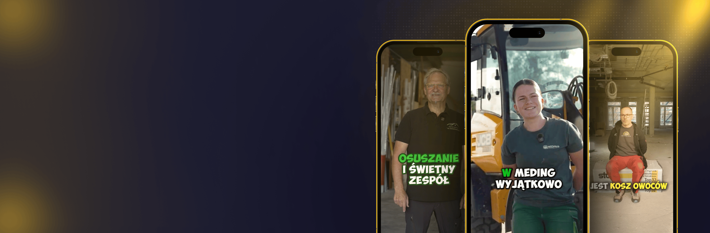

01 · System w pięciu komórkach
Oferta oparta na motywie
Decyduje to, jak komunikujemy powód zmiany pracy. „Płaską hierarchię” chce każdy, a mimo to takie frazesy nic nie dają. Znajdujemy motyw, który w Waszej firmie naprawdę jest prawdziwy, i stawiamy go na pierwszym miejscu.
- Z ponad 464 zatrudnień: co naprawdę porusza fachowców
- Jeden powód zmiany, nie lista
- Sformułowany pod Wasz region i branżę

Przykłady z bieżących kampanii